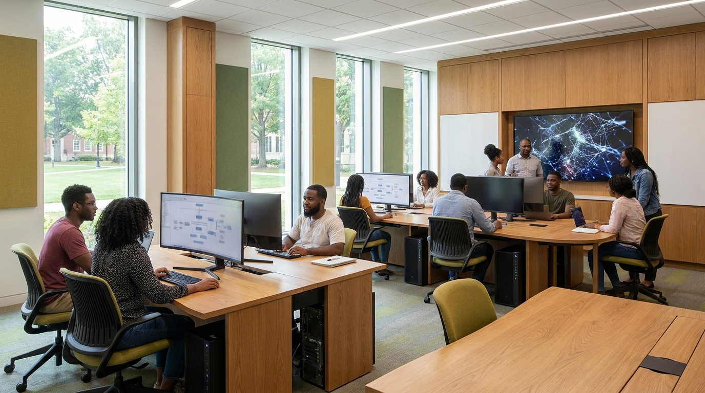
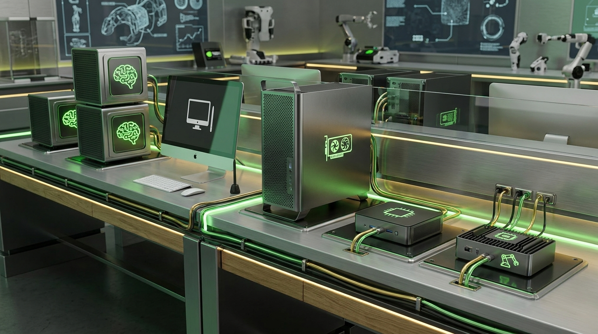
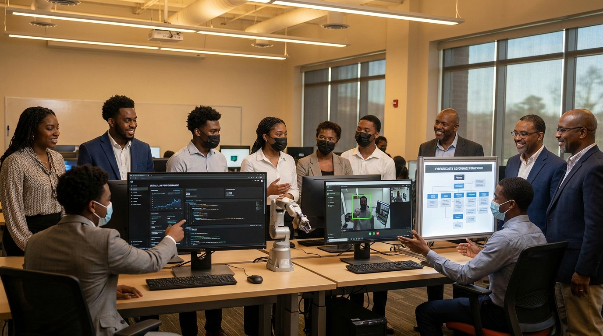

Direct Oakwood note
Obsidian contains “Oakwood University — Ms. Smith & AI Lab,” dated May 13, tagged school, Oakwood, OU Campus, AI lab, and Ms. Smith.

A hardware, curriculum, and governance concept for a 10-seat AI lab that lets students use AI, build with AI, understand local models, practice security, and present real portfolio outcomes.
Workspace references confirm this is not a random idea. It has been sitting in the Oakwood opportunity lane since May 13.
Obsidian contains “Oakwood University — Ms. Smith & AI Lab,” dated May 13, tagged school, Oakwood, OU Campus, AI lab, and Ms. Smith.
The note says Ms. Smith runs computer science, wants computer labs upgraded, has funding, and needs guidance on what will be useful.
The May 13 priority map says to share OU Campus Companion and prepare a short memo covering lab setup, model/tool stack, governance, training, and student outcomes.
Oakwood does not need a room full of ordinary computers with ChatGPT bookmarks. The strongest move is a visible AI production studio where students can move from curiosity to deployable work.
Students learn practical prompting, research, writing, analysis, design, coding, and presentation workflows with clear academic integrity rules.
Students build apps, agents, automations, retrieval systems, voice tools, dashboards, and campus-facing prototypes.
The lab demonstrates local models, privacy tradeoffs, GPU constraints, inference speed, fine-tuning, and cloud-to-edge deployment.
Students practice security, data handling, evaluation, bias testing, policy writing, audit trails, and responsible deployment.
Each option supports a 10-seat lab. The difference is how much local AI compute, production polish, and advanced experimentation Oakwood wants on day one.
Best for an immediate pilot and proof of student outcomes.
Best default if the goal is serious student production across all 10 seats.
Best for a lab that can credibly support faculty research and advanced AI courses.
Best for a signature HBCU AI lab that can recruit, train, and host partners.
Procurement note: final SKUs should be quoted before purchase. The strategic split is more important than brand loyalty: 10 reliable seats, shared local AI compute, serious networking/storage, and a visible demo environment.
The room should signal “AI production” the moment someone walks in: not a computer classroom, not a generic lab, but a space where students build and present.

Ten seats arranged for pair work, code reviews, and rapid workshop transitions.
Shared machines for running Ollama/vLLM, testing model sizes, and comparing latency.
Large display for live builds, student presentations, model evals, and visiting donors.
Camera, mic, lights, and capture station so students can publish what they build.
Governance exercises: red-team prompts, privacy tiers, prompt injection, audit logs.
Robotics, vision, sensors, Jetson-class devices, and physical AI demonstrations.
Use a mixed architecture. Students need daily-driver machines, local model systems, GPU horsepower, and cloud literacy. One machine type cannot teach the whole field.
| Layer | What It Teaches | Good Fit | Where It Lands |
|---|---|---|---|
| Student seats | AI-assisted coding, design, notebooks, data work, app builds, presentations. | Framework Desktop AI Max, Mac Studio M4 Max, or RTX 5070/5080-class PCs. | Every budget. |
| Local AI node | Local LLM inference, privacy, quantization, context limits, model serving. | DGX Spark-class GB10 128GB unified memory systems or equivalent high-memory AI mini-workstations. | $20K and up. |
| Shared GPU server | Fine-tuning, batch inference, computer vision, evaluation harnesses, team jobs. | RTX 5090/RTX PRO 6000 Blackwell-class server depending on budget and vendor quote. | $100K and up. |
| Edge AI | Robotics, cameras, physical AI, sensors, low-latency inference. | Jetson Thor/Orin-class kits, webcams, depth cameras, small robotics kits. | $50K and up. |
| Network/storage | Model storage, dataset governance, backup, MLOps basics, shared project access. | 10GbE minimum, 25GbE for advanced builds, NAS with snapshots, access control. | Every budget. |

This can become a course, certificate, club lab, summer bridge, or faculty development track. The same spine supports multiple formats.
Prompting, research, study workflows, academic honesty, source checking, multimodal tools.
Students ship simple apps with AI-assisted coding, GitHub, Vercel, databases, and auth basics.
Ollama, LM Studio, vLLM, quantization, embeddings, RAG, benchmarking, model selection.
Tool calling, workflows, browser agents, scheduled tasks, memory, approval gates.
Prompt injection, data leakage, permissions, evaluation, audit logs, policy templates.
Clean data, analyze with notebooks, build dashboards, explain uncertainty and limits.
Speech, image generation, video workflows, accessibility, storytelling, presentation design.
Teams solve campus/community problems and publish demo sites, videos, and technical briefs.
The videos Jon provided all point to the same message: young builders are no longer waiting for permission, credentials, or perfect conditions.
The Kimi/Claude website video shows a workflow where one person can produce agency-level web experiences quickly by combining the right models, references, and deployment tools.
The Zach Yadegari/Cal AI interviews show the new ceiling: students who learn fast, ship early, and solve simple painful problems can reach market traction before age 20.
The Carson Reed video argues for selling business outcomes and AI systems, not just pages. That maps directly to Oakwood students learning practical client-ready solutions.
The lab can turn this energy into structured opportunity: HBCU students building AI apps, governance models, media, research, and community tools with faculty support.

The lab should make responsible AI a practice, not a poster. Students should learn to build powerful systems with clear boundaries.
Public, internal, sensitive, and restricted data rules for projects, prompts, uploads, and model storage.
Policies for email, public posts, student data, financial data, medical data, and administrative actions.
Students test hallucination, bias, privacy risk, prompt injection, jailbreaks, and measurable task quality.
The best version starts small enough to ship, but designed with enough ambition that donors and students can see where it is going.
Confirm budget, room dimensions, network constraints, purchasing rules, faculty champions, and initial course/club format.
Finalize SKUs, vendor quotes, access policies, data tiers, local model stack, and student account structure.
Deploy seats, network, NAS, display wall, local model server, GitHub/Vercel workflow, and lab dashboard.
Run a sprint where students ship one AI-assisted app, one local model demo, and one responsible AI evaluation artifact.
Show student work, publish a polished recap, identify internships/partners, and use outcomes to justify the next tier.
Keep the conversation grounded in outcomes first, hardware second.
AI is compressing the distance between idea and implementation. Oakwood can give students a serious seat at that table now.
Walk through the zones: student seats, local models, demo wall, studio corner, security table, edge AI bench.
Present the four price tiers, then ask which one matches the funding source, procurement timeline, and room constraints.
IDC can convert the preferred tier into a procurement memo, room diagram, rollout plan, and 8-week pilot curriculum.
Use it as proof that Jon can move from idea to deployable experience quickly and can mentor students through the same motion.
The lab should produce public demos, internships, portfolios, grant narratives, and faculty-ready AI literacy.
Quick source trail used for the meeting version.
Internal references: Obsidian note “Oakwood University — Ms. Smith & AI Lab” dated 2026-05-13; projects/jon-priority-reset-2026-05-13/priority-map.md; memory/2026-05-13.md; active Telegram draft capture from 2026-05-18.
Hardware source trail: NVIDIA DGX Spark official page lists GB10 Grace Blackwell, up to 1 petaFLOP FP4, 128GB unified memory, local models up to 200B parameters, and paired systems up to 405B models. NVIDIA Jetson Thor official page lists Blackwell edge AI, 2070 FP4 TFLOPS, and 128GB memory. Apple Mac Studio official specs list M4 Max/M3 Ultra options, up to 512GB unified memory, and Thunderbolt 5. Framework Desktop public listings show AMD Ryzen AI Max configurations up to 128GB memory; final pricing should be quote-verified.
Video references: 03IhVSEiICA, t0U3UREdjmo, 5fQ-JyHggBI, and 8FysaFHj79U were used for inspiration around student builders, AI-assisted design, monetizable apps, and business-outcome framing.
Generated visuals: Concept images generated for this briefing with Gemini image generation through OpenClaw. They are illustrative room concepts, not architectural drawings.